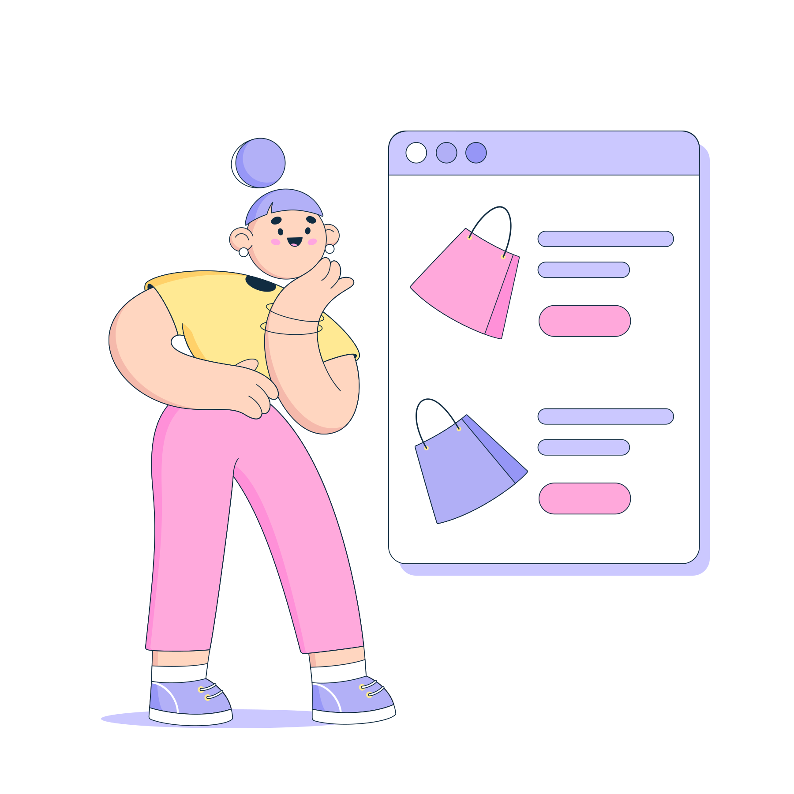
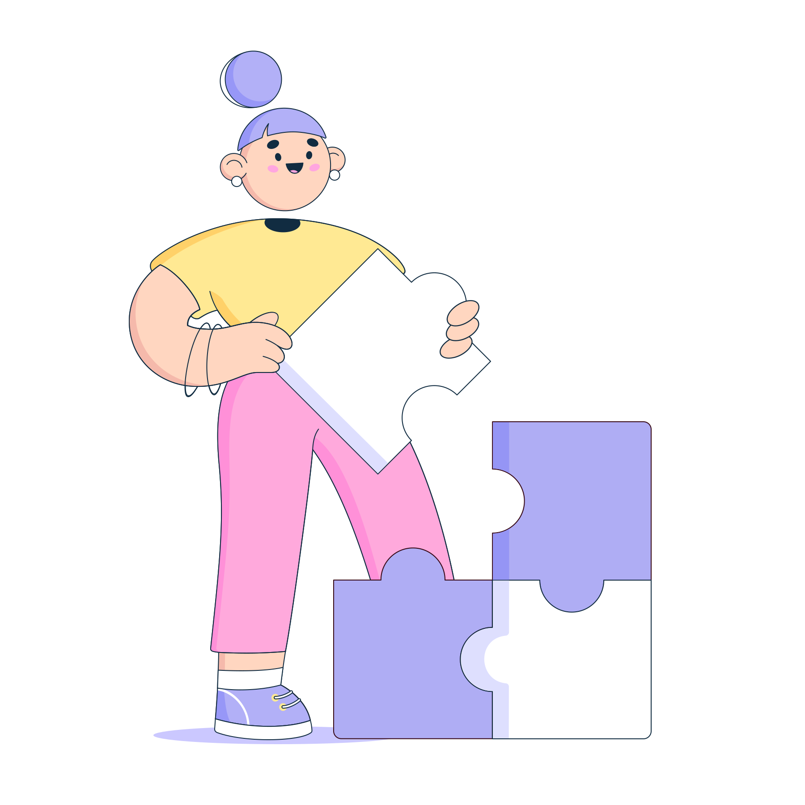
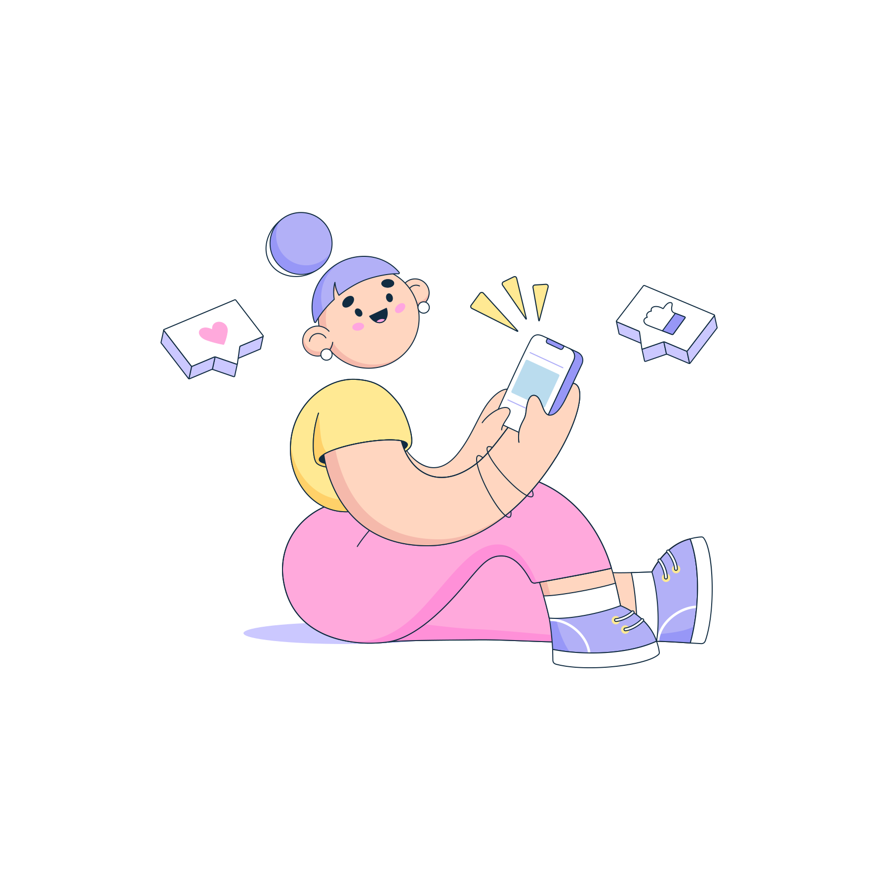
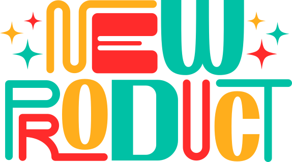

Mercadotecnia
Para entender cómo funciona, es importante conocer las estrategias y herramientas que se utilizan en este ámbito. Una de las principales diferencias entre la mercadotecnia tradicional y la digital es que en la segunda se cuenta con una gran cantidad de datos sobre el comportamiento del consumidor en línea, lo que permite una mayor personalización en la oferta de productos y servicios.
Mercadotecnia
Esta se centra en la promoción y venta de productos y servicios a través de canales digitales como sitios web, redes sociales, correos electrónicos, aplicaciones móviles y otros medios en línea.
La mercadotecnia
Se basa en el análisis de datos y el uso de herramientas tecnológicas para mejorar la experiencia del usuario y aumentar la conversión de ventas. Esto incluye el uso de técnicas como el SEO (optimización de motores de búsqueda), la publicidad en línea, el marketing de contenidos, el email marketing, las redes sociales, la analítica web y el remarketing.
La mercadotecnia
Se enfoca en el desarrollo de estrategias para aumentar la lealtad y retención de los clientes, como la personalización de la experiencia de compra, la creación de programas de fidelidad y la atención al cliente en línea.
La mercadotecnia
Es fundamental tener una presencia activa en las redes sociales, ya que éstas se han convertido en un medio de comunicación muy poderoso entre las empresas y sus clientes potenciales. También es importante tener una estrategia clara de correo electrónico, para enviar ofertas personalizadas y recordatorios a los clientes.
En resumen
Tiene como objetivo principal llegar al cliente ideal, ofreciéndole productos y servicios personalizados y útiles, a través de diferentes canales digitales. Para lograrlo, se necesitan herramientas y estrategias específicas, y una constante adaptación a las tendencias del mercado.
Arrastra las palabras en el orden correcto
| Investigación de mercado |
| Implementación |
| Desarrollo del plan de marketing |
| Definición de la estrategia de marketing |
| Evaluación y control |
Felicidades, llegaste al final.
Vamos a realizar una pequeña prueba para reforzar lo aprendido:
- 6 Preguntas (20 segundos cada una)
- Acumula puntos por pregunta correcta
- 200 segundos en el reloj
- Preguntas aleatorias
- Tu resultado al final

- 6 Preguntas (20 segundos cada una)
- Acumula puntos por pregunta correcta
- 200 segundos en el reloj
- Preguntas aleatorias
- Tu resultado al final